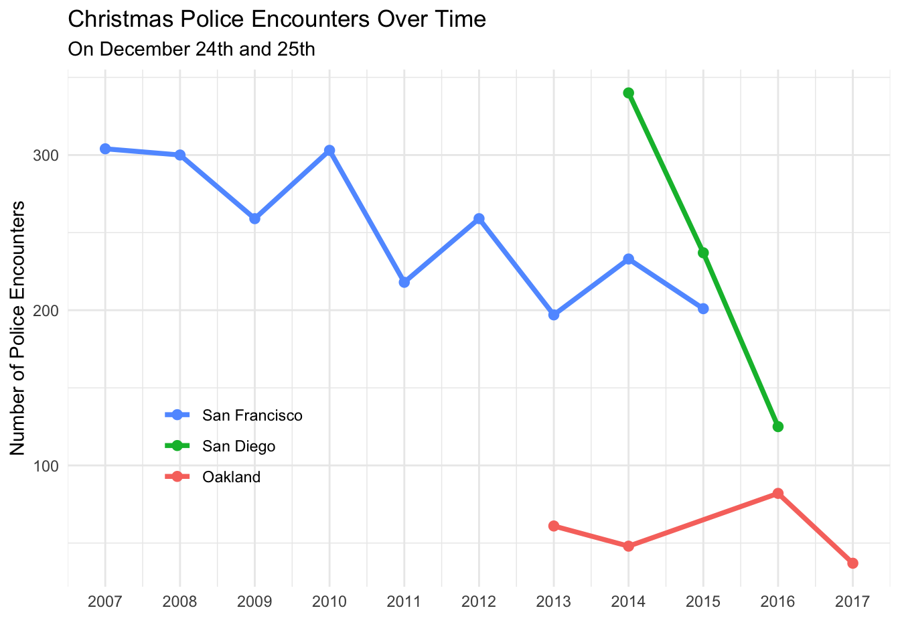
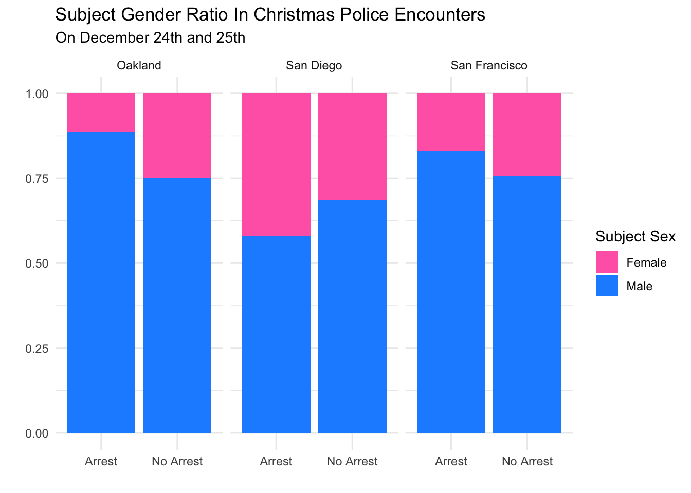

library(tidyverse)
library(lubridate)
library(RMariaDB)SQL Policing Policy Project
Understanding SQL Through Evaluation of the Stanford Open Policing Project
Photo by Wesley Tingey on Unsplash
Overview
For this project, I use data from the Stanford Open Policing Project (2025) in a similar way as Pierson et al. (2020). I am able to look at police activity on Christmas Eve and Christmas Day in three California cities: Oakland, San Diego, and San Francisco. From the data, I am able to get information on traffic and pedestrian stops that occur on December 24th and 25th. I am also able to review how often these stops result in arrest, as well as the arrests breakdown by sex across the three cities. Per the assignment, all data wrangling is performed with SQL. R is used only for visualization or exploration of the resulting tables. The goal is to see how Christmas looks over time in terms of police enforcement patterns.
Libraries
SQL Code
Connection to the Stanford Open Policing Project SQL database using RMariaDB.
con_traffic <- DBI::dbConnect(
RMariaDB::MariaDB(),
dbname = "traffic",
host = Sys.getenv("TRAFFIC_HOST"),
user = Sys.getenv("TRAFFIC_USER"),
password = Sys.getenv("TRAFFIC_PWD")
)First, we want to review all the data tables in the data base to understand the format.
SHOW TABLES;| Tables_in_traffic |
|---|
| ar_little_rock_2020_04_01 |
| az_gilbert_2020_04_01 |
| az_mesa_2023_01_26 |
| az_statewide_2020_04_01 |
| ca_anaheim_2020_04_01 |
| ca_bakersfield_2020_04_01 |
| ca_long_beach_2020_04_01 |
| ca_los_angeles_2020_04_01 |
| ca_oakland_2020_04_01 |
| ca_san_bernardino_2020_04_01 |
Next, we describe one data table to examine the variables within the ca_san_diego_2020_04_01 table.
DESCRIBE ca_san_diego_2020_04_01;| Field | Type | Null | Key | Default | Extra |
|---|---|---|---|---|---|
| raw_row_number | text | YES | NA | ||
| date | date | YES | NA | ||
| time | time | YES | NA | ||
| service_area | text | YES | NA | ||
| subject_age | bigint(20) | YES | NA | ||
| subject_race | text | YES | NA | ||
| subject_sex | text | YES | NA | ||
| type | text | YES | NA | ||
| arrest_made | double | YES | NA | ||
| citation_issued | double | YES | NA |
Data Visualization
We intend to visualize our data.
Christmas Police Encounters Over Time
We run SQL code to select variables from three cities: Oakland, San Diego, and San Francisco. We filter for two dates: Christmas Eve and Christmas Day. We output the data table into a variable in our environment called enc_over_time.
SELECT EXTRACT(YEAR FROM date) AS year,
'oak' AS city,
COUNT(*) AS n
FROM ca_oakland_2020_04_01 AS oak
WHERE DATE_FORMAT(date, '%m-%d') IN ('12-24', '12-25')
GROUP BY EXTRACT(YEAR FROM date)
UNION
SELECT EXTRACT(YEAR FROM date) AS year,
'sd' AS city,
COUNT(*) AS n
FROM ca_san_diego_2020_04_01 AS sd
WHERE DATE_FORMAT(date, '%m-%d') IN ('12-24', '12-25')
GROUP BY EXTRACT(YEAR FROM date)
UNION
SELECT EXTRACT(YEAR FROM date) AS year,
'sf' AS city,
COUNT(*) AS n
FROM ca_san_francisco_2020_04_01 AS sf
WHERE DATE_FORMAT(date, '%m-%d') IN ('12-24', '12-25')
GROUP BY EXTRACT(YEAR FROM date);This code generates a plot that visualizes Christmas police encounters over time.
enc_over_time |>
ggplot(aes(x = year, y = n, color = city)) +
geom_point(size = 2.25) +
geom_line(size = 1.3) +
scale_x_continuous(
breaks = seq(
floor(min(as.numeric(enc_over_time$year))),
ceiling(max(as.numeric(enc_over_time$year))),
by = 1
)
) +
labs(
title = "Christmas Police Encounters Over Time",
subtitle = "On December 24th and 25th",
x = "",
y = "Number of Police Encounters",
) +
scale_color_discrete(
name = "",
breaks = c("sf", "sd", "oak"),
labels = c("San Francisco", "San Diego", "Oakland")
) +
theme_minimal() +
theme(legend.position = c(0.2, 0.3))
We review the plot and see that all three cities have a downward trending number of police encounters on Christmas. Specifically, we do not have that much data for San Diego or Oakland. However, San Diego has the most drastic decrease of the three between 2014 and 2016. San Francisco has the greatest number of years of data out of the three cities. It also has the most consistent downward trend of the three cities.
Christmas Police Encounters By Sex
We create a new data set that contains the number of police stops by sex of subject and city so that the data is able to be plotted.
SELECT 'Oakland' AS city, subject_sex,
CASE
WHEN arrest_made = 1 THEN "Arrest"
ELSE "No Arrest"
END AS arrest_made,
COUNT(*) AS n
FROM ca_oakland_2020_04_01 AS oak
WHERE DATE_FORMAT(date, '%m-%d') IN ('12-24', '12-25') AND
subject_sex IS NOT NULL AND
arrest_made IS NOT NULL
GROUP BY subject_sex, arrest_made
UNION
SELECT 'San Diego' AS city, subject_sex,
CASE
WHEN arrest_made = 1 THEN "Arrest"
ELSE "No Arrest"
END AS arrest_made,
COUNT(*) AS n
FROM ca_san_diego_2020_04_01 AS sd
WHERE DATE_FORMAT(date, '%m-%d') IN ('12-24', '12-25') AND
subject_sex IS NOT NULL AND
arrest_made IS NOT NULL
GROUP BY subject_sex, arrest_made
UNION
SELECT 'San Francisco' AS city, subject_sex,
CASE
WHEN arrest_made = 1 THEN "Arrest"
ELSE "No Arrest"
END AS arrest_made,
COUNT(*) AS n
FROM ca_san_francisco_2020_04_01 AS sf
WHERE DATE_FORMAT(date, '%m-%d') IN ('12-24', '12-25') AND
subject_sex IS NOT NULL AND
arrest_made IS NOT NULL
GROUP BY subject_sex, arrest_made;This code generates a plot that visualizes Christmas police encounters by sex in three cities.
enc_by_sex |>
ggplot(aes(x = arrest_made, y = n, fill = subject_sex)) +
geom_col(position = "fill") +
facet_wrap(city~.) +
labs(
title = "Subject Gender Ratio In Christmas Police Encounters ",
subtitle = "On December 24th and 25th",
x = "",
y = "",
) +
scale_fill_manual(
name = "Subject Sex",
values = c(
"female" = "#FF69B4",
"male" = "#1E90FF"
),
labels = c("Female", "Male")
) +
theme_minimal()
We review the plot and see that the percent breakdown of subject sex differs between the three cities across all available years. Of the police encounters, the proportions of males is highest in Oakland regardless of whether an arrest was made or not. San Diego surprisingly had a significantly larger proportion of women being arrested compare to the other cities. However, this anomaly may be due to the fact that San Diego has only three years of data and is the only city located in Southern California. In that vain, San Francisco’s proportions are similar to that of Oakland’s. Both cities are in the bay area. In the bay area, it appears that when women are encountered by the police, it is for less serious reasons. This inference can be drawn from the fact that the female proportion that is arrested is smaller than the non-arrested proportion.
Conclusion
In this project, I use SQL to extract and combine data on police stops that occurred on Christmas Eve and Christmas Day. The Stanford Open Policing Project provides data for stops in Oakland, San Diego, and San Francisco. I summarize these stops into two main findings and visualize: the number of Christmas encounters over time by city and the breakdown of encounters by arrest outcome as well as subject sex. The first plot shows that Christmas encounters appear to decline over time, especially in San Diego and San Francisco. The second plot highlights that men make up the majority of subjects in Christmas encounters across all three cities. However, there is some variation in the proportion of stops that lead to arrest. Together, these results illustrate how SQL and this large policing database can be used to explore temporal and demographic patterns in enforcement, even when focusing on just a couple of specific days of the year.
References
Pierson, Emma, Camelia Simoiu, Jan Overgoor, Sam Corbett-Davies, Daniel Jenson, Amy Shoemaker, Vignesh Ramachandran, and et al. 2020. “A Large-Scale Analysis of Racial Disparities in Police Stops Across the United States.” Nature Human Behaviour, 1–10.
Stanford Open Policing Project. 2025. “Stanford Open Policing Project.” https://openpolicing.stanford.edu/.